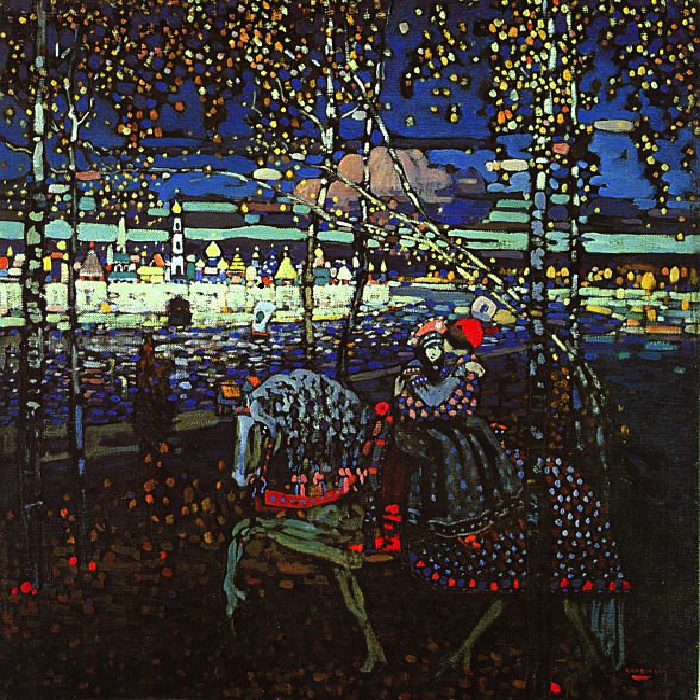

«Двое на лошади»
Описание
Творческие методы Кандинского похожи на его биографию - постоянное движение вперед и много перемен. Интересно с этой точки зрения смотреть на его ранние работы, в которых можно заметить намеки на то, как кардинально изменится его стиль.
Картина "Двое на лошади" на первый взгляд обычна, в ней есть фольклорные и сказочные мотивы, и, возможно, ностальгия. Но с другой она демонстрирует, как на первый план у художника постепенно выходят линии и цветовые пятна. Лица людей нарисованы не четко, их расслабленная и задумчивая поза говорит о самоуглубленности. Кажется, всадник не держит поводья, и лошадь везет их сама. Простой сюжет и большое пространство для фантазий: кто они, куда едут? Во времена Средневековья движение на картинах "справа на лево" означало возвращение домой. Возможно, поэтому фигуры на полотне так спокойны.
Картина похожа на старинную мозаику с темной цветовой гаммой, которая разбавлена более яркими красками. Преобладает синий цвет, который, по мнению Кандинского - "типично небесный цвет, и при сильном его углублении развивается элемент покоя". Полотно исполнено романтичности и нежности. Художник говорил, что воплотил в картине "многие свои мечты" и во время работы чувствовал сердечный трепет, как настоящий поэт.